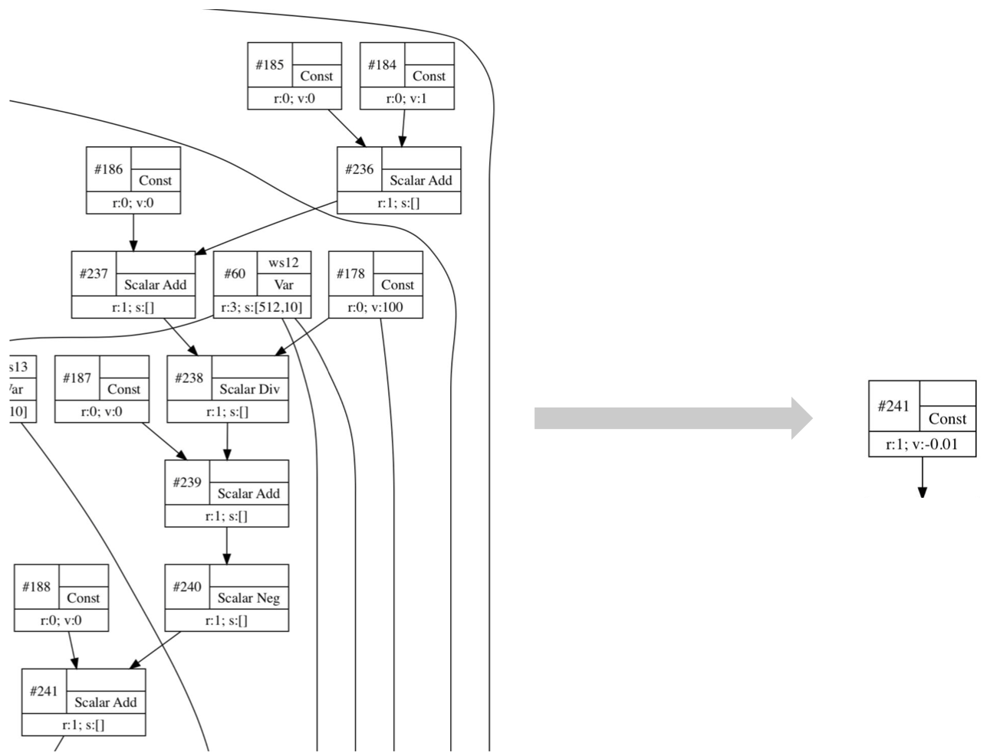

Computation Graph
This is not a tutorial on how to use the computation graph in Owl. Instead, what I will present is a bird’s-eye view on how the computation graph is designed then fitted into Owl’s functor stack, and its implications on the architecture of numerical systems.
To motivate you to continue reading this article, you can try to run both mnist_cnn.ml and lazy_mnist.ml then compare their performance. Both Zoo scripts train the same convolutional neural network to recognise the handwritten digits using MNIST datasets in 60 iterations. On my laptop, mnist_cnn.ml takes 30s to finish and consumes approximate 4GB memory, whilst lazy_mnist.ml only takes 5s and consumes about 0.75GB. lazy_mnist.ml achieves the state-of-the-art performance which you can obtain by using TensorFlow (with its recent XLA optimisation), actually Owl runs even faster on 3 out of 4 machines we have tested.
OK, if these numbers arouse your interest in knowing how the magic happens, let me unveil the underlying mechanism of Owl’s computation graph in the following sections.
What Is A Computation Graph?
As a functional programmer, it is basic knowledge that a function takes an input then produces an output. The input of a function can be the output of another function which then creates dependency. If we view a function as one node in a graph, and its input and output as incoming and outgoing links respectively, as the computation continues, these functions are chained together to form a directed acyclic graph (DAG). Such a DAG is often referred to as a computation graph.
Here is an example graph for calculating function sin (x * y).

The generated computation graph contains several pieces of information which are essential for debugging the applications. These information includes node index, operation type, reference counter, and shapes of data. In the figure above, we can see the row vector y of shape [1; 4] is broadcasted on the matrix x of shape [8; 4] in Mul operation.
The computation graph can be either implicitly constructed or explicitly declared in the code. Often, implicit construction is done by operator overloading while explicit declaration uses domain specific languages (DSL). The two methods lead to two different kinds of computation graphs – dynamic and static graph, each has its own pros and cons.
Dynamic graph is constructed during the runtime. Due to operator overloading, its construction can be naturally blended with a language’s native constructs such as if ... else ... and for loops. This renders greatest flexibility and expressiveness. On the other hand, a static graph needs to be declared using a specific DSL (which has a steeper learning curve). Because the structure of a graph is already known during the compilation phase, there is a great space for optimisation. However, static graphs sometimes make it difficult to express conditions and loops when using with native code together.
As we can see, the flexibility of a dynamic graph comes with the price of lower performance. Facebook’s Pytorch and Google’s TensorFlow are the typical examples of dynamic and static graph respectively. Interestingly, Owl does something slightly different from these two in order to get the best parts of both worlds, we will detail this in the following.
Why Does It Matter?
Now that you know what is a computation graph, you may ask why it matters? Well, the computation graph makes many things a lot easier. Here is an incomplete list of potential benefits.
- Simulate lazy evaluation in a language with eager evaluation;
- Incremental computation (a.k.a Self-Adjusted Computation);
- Reduce computation complexity by optimising the structure of a graph;
- Reduce memory management overhead by pre-allocating the space;
- Reduce memory footprint by reusing allocated memory space;
- Natural support for parallel and distributed computing;
- Natural support for heterogeneous computing;
- Natural support for symbolic maths;
Some of the benefits are very obvious. Memory usage can certainly be optimised if the graph structure is fixed and the input shapes are known. One optimisation is reusing previously allocated memory, which is especially useful for those applications involving large ndarray calculations. In fact, this optimisation can also be performed by a compiler by tracking the reference number of allocated memory, a technique referred to as linear types.
Some may appear less obvious at the first glance. For example, we can decompose a computation graph into multiple independent subgraphs and each can be evaluated in parallel on different cores or even computers. Maintaining the graph structure also improves fault-tolerance, by providing natural support for rollback mechanisms.
The computation graph provides a way to abstract the flow of computations, therefore it is able to bridge the high-level applications and low-level machinery of various hardware devices. This is why I say it has natural support for heterogeneous computing.
The computation graph has more profound implications. Because the memory allocated for each node is mutable, Algodiff becomes more scalable when evaluating large and complex graphs. At the same time, mutable transformation is handled by Owl so programmers can still write safe functional code.
How Is It Designed?
How is the computation graph is designed? In the older versions, Algodiff module has some partial support of computation graph in order to perform reverse mode algorithmic differentiation (AD). The full support was only introduced in Owl 0.4.0.
Owl implements the computation graph in a very unique and interesting way. Let’s first see several principles which I followed.
- Non-intrusive, the original functor stack should work as it was.
- Transparent to the programmers as much as possible.
- Support both eager and lazy evaluation.
- Flexible enough for future extension on other devices.
The computation graph is implemented in a very self-contained stack. I have devised a good way to “inject” it into Owl’s original functor stack. If it sounds too abstract, please have a look at the final product in the following figure.

The left figure shows part of Owl’s original functor stack, and the right one shows how the current one looks like after injection. We know the functor stack plays a central role in Owl’s architecture. In the old design, Ndarray implements a set of fundamental n-dimensional array operations, then Algodiff defines abstract mathematical operations for differentiation, finally Optimise engine glues low-level maths with high-level deep neural network applications. The whole stack is parameterised by the number type abstraction in Ndarray.
Ndarray: provides number type abstraction and implements the fundamental numerical operations.Algodiff: implements algorithmic differentiation.Optimise: uses the derivative information to build an optimisation engine.Neural_Neuron: implements various kind of neuron functions which can be optimised.Neural_Graph: connects neurons together to form a network so that we can train a useful model.
The functor stack of computation graph is injected between Ndarray and Algodiff. The design principle is that the functor stack of a numerical system should be parameterised by both number type and device type. Number type provides data representation (real or complex, single or double, row-based or column-based layout, etc.) which decides how a maths construct should be built and operated. Device type provides hardware representation (CPU, GPU, FPGA, etc.) which decides how the computation should be performed on a specific device.
The list below summarises the functionality of each functor. The order and naming of these functors can already give you a rough understanding about how it is designed.
Device: device abstraction contains device-dependent types and functions.Type: type definition of various (mathematical) operations.Shape: provides the shape inference function in the graph.Symbol: provides various functions to manipulate symbols.Operator: implements maths operators (+,-,*,/, and etc.) which decide how the symbols should be connected to form a graph.Optimiser: optimises the structure of a given graph by searching and optimising various patterns.Graph: manipulates computation graphs at high level, e.g. visualisation, connecting inputs and outputs.Engine: evaluates a computation graph on a specific device.
Why the magic can happen? Simply put, the injected computation graph stack provides an abstraction layer similar to symbolic maths. The original eager evaluation becomes symbolic operation (or graph construction) therefore they can be lazily evaluated.
The shape inference functionality is able to infer the data shape of every node in a graph from its input. This allows Owl to calculate how much memory is required to evaluate the graph and pre-allocate this space. Owl can further track the reference number of each function node and reuse the allocated memory as much as possible, which reduces both memory footprint and Garbage Collector (GC) overhead, significantly improves the computation speed.
The Optimiser functor searches for various structural patterns in a graph, removes unnecessary computations and fusing computation nodes if possible. All the patterns are defined in owl_computation_optimiser.ml, and it is very straightforward to plug in more patterns to extend Optimiser’s capability. Here are some example patterns.
Constant folding is a very basic pattern to reduce graph size. We can pre-calculate some subgraphs. For example, the inputs which node #241 depends on are all constants, so the value of #241 is already decided. We can fold all the constants to node #241 before evaluating the whole graph.

Fusing operations can effectively reduce the round trips to the memory, which saves a lot of time when operating large ndarrys. In the figure below, nodes #421, #463, and #464 are fused into one fma node (i.e. fused-multiply-add operation), which also improves numerical accuracy. Owl also recognises quite complicated patterns, e.g. pattern formed by nodes #511 – #515 appears a lot in DNN training that uses Adagrad (Adaptive Subgradient Methods), the Optimiser is able to fuse all these operations into one-pass calculation.

In the next example, Adding zero pattern is firstly detected hence #164 and #166 are removed and others are folded. Moreover, nodes #255 for repeat operation is also removed because add operation already supports broadcasting operation. Removing #255 can save some runtime memory in the evaluation.

To understand how effective the Optimiser works, I present both the original computation graph and the optimised graph taken from lazy_mnist.ml. Comparing to the original network which has 201 nodes, 239 edges, the optimised one contains only 103 nodes, 140 edges.
{kind=link}
{kind=link}
Engine functor sits on top of the stack, this is where a computation graph finally gets executed. Engine functor contains two sub modules, one for initialising the graph and the other for evaluating graph.
Before we finish this section, we can try the following snippet in utop. Both snippets generate a module for DNN applications, the difference is that the first one uses the old stack whereas the second one uses the new stack with computation graph.
module M =
Owl_neural_generic.Flatten (
Owl_neural_graph.Make (
Owl_neural_neuron.Make (
Owl_optimise_generic.Make (
Owl_algodiff_generic.Make (
Dense.Ndarray.S)))));;
For the new stack, we can see it is indeed much deeper.
module M =
Owl_neural_generic.Flatten (
Owl_neural_graph.Make (
Owl_neural_neuron.Make (
Owl_optimise_generic.Make (
Owl_algodiff_generic.Make (
Owl_computation_engine.Flatten (
Owl_computation_cpu_engine.Make_Nested (
Owl_computation_graph.Make (
Owl_computation_optimiser.Make (
Owl_computation_operator.Make (
Owl_computation_symbol.Make (
Owl_computation_shape.Make (
Owl_computation_type.Make (
Owl_computation_cpu_device.Make (
Dense.Ndarray.S))))))))))))));;
What to Do with GPU?
Programming a GPU is very much like programming a computer cluster. The gain of parallel computing comes with inevitable synchronisation and communication overhead. Therefore GPU computing only makes sense when the computation complexity is high enough to dwarf other overhead.
When offloading the computation to a GPU, we should avoid transmitting data back and forth between the host and the device memory, so eager evaluation is not ideal in this context because the performance will be throttled by copying. This is the gap between CPU computing and a language with eager evaluation. Computation graph essentially fills the gap between Owl and GPU computing simply because the laziness can be simulated now.
From implementation perspective, we only need to write a new engine functor for GPU devices to evaluate a graph, all the others remain the same. I am currently working on the OpenCL engine. The amount of code for implementing OpenCL engine is surprisingly small, only around 700 ~ 900 LOC. Comparing to the CPU engine, the OpenCL engine maintains the memory allocated on both host and device for each node, copying only happens whenever it is necessary, the allocated memory on the device is reused as much as possible.
JIT - From Dynamic to Static
Recall the tradeoff between dynamic and static graph I mentioned before, i.e. flexibility vs efficiency. Many programmers need to make a decision between Google’s TensorFlow and Facebook’s Pytorch. A common practice is – “using Pytorch at home and using TensorFlow in the company”, In other words, Pytorch is preferred for prototyping and TensorFlow is ideal for production use. Can we get the best parts of both worlds?
It turns out, for a specific type of applications like DNN, we can! Owl achieves this by converting a dynamic graph into static one in the runtime. The motivation is based on a very important observation – in many cases, a computation graph is continuously re-evaluated after its construction. This is especially true for those iterative optimisation algorithms, we only update some inputs of the graph in each iteration.
If we know that the graph structure remains the same in every iteration, rather than re-constructing it all the time, we can convert it into a static graph before the iterative evaluation. This is exactly what Owl does. By so doing, the programmer can enjoy the flexibility offered by the dynamic graph construction with operator overloading, but still achieve the best performance from static graph.
Comparing to TensorFlow, the time overhead (for graph conversion and optimisation) is shifted to the runtime in Owl. You may worry about the performance - “Is it going to slow down my fancy DNN application?” The fact is, even for large and complex graphs, this Just-in-Time compilation (JIT) and optimisation are often quite fast. In this lazy_lstm.ml example, there are 15,105 nodes and 21,335 edges. Owl is able to compile the graph within 230ms then optimise it within 210ms. The optimised graph contains only 8,224 nodes, 14,444 edges and runs much faster. Remember that you only need to do it once before training. For smaller networks, it often just takes several milliseconds.
Technically, JIT is very straightforward to implement in Owl’s architecture. Given a deep neural network, Owl first runs both forward pass and backward pass. Because of the computation graph, the calculation becomes symbolic and we can obtain the complete computation graph to calculate the loss and gradients of a neural network. We can then pass this static graph to the optimisation engine to optimise. The Neural Compiler functor is parameterised by a computation engine then compiles a DNN definition and training configuration into a device-dependent static graph.
Examples of Using CGraph
TBD
Computer Vision and CGraph
The design of Owl is often driven by real-world applications. Besides the MNIST example, we find the image segmentation another challenging application for Owl. Seeking to push the performance of this application, we manage to further optimise the design of CGraph module. This work is done by Pierre Vandenhove, and you can visit his report for more details. It starts with the MRCNN-based Object Detection application we introduce in the Case - Object Detection chapter. Please refer to this chapter for detail explanation of this application.
The first issue after constructing the network in Owl was that the memory usage, in inference mode, was huge. The network has over 400 layers and to avoid reinitialising the network for every picture, it is good to keep its input size fixed and to resize instead all the images to that size — a larger size takes more time and memory but yields more accurate results. A reasonable input size for this network is a 1024-pixel-wide square. Unfortunately, obtaining detections for one picture with this size required over 11 GB of RAM, which was too much for a laptop. As a comparison, the TensorFlow implementation only uses 1 GB. There was a big room for improvement!
This is where CGraph comes to rescue. A computation graph is always directed and acyclic. Representing the structure of a program as a computation graph has several advantages, especially for computationally-intensive code dealing with big multi-dimensional arrays. A really useful one is that prior to evaluating the nodes, you can optimise the structure of the graph: for instance, useless calculations such as adding an array with nothing but zeros can be removed, common patterns can be merged into one node and executed more efficiently, etc. This helps a bit: thanks to these optimisations, the number of nodes of Mask R-CNN drops from 4095 to 3765. Another really important feature in this case is the ability to pre-allocate a memory space to each node, to decrease the overall memory consumption and reduce the garbage collector overhead.
Optimising memory with pebbles
To describe the problem of allocating memory in a computation graph, it is interesting to look at the pebble game, which was introduced in 1973 to explain register allocation.
The pebble game is played on a directed acyclic graph. Each node can store at most one pebble. The game begins with no pebble on any node. At each step, the player can do one of the following moves:
- if a vertex \(v\) has no predecessor, the player can place a pebble on
v. - if all predecessors of a vertex \(v\) are pebbled, the player can place a pebble on
vorslidea pebble from one of its predecessors tov. - the player can remove any pebble from a vertex (and reuse that pebble later).
The goal of the game is to place a pebble at least once on some fixed output vertices of the graph.
Here is an example of an optimal pebbling strategy using the previous computation graph (gray nodes are pebbled), using moves 1 -> 2 -> 3 -> 1 -> 2 -> 2. We assume that the goal is to pebble node 5:

This relates to the memory allocation of the computation graph if we see pebbles as memory blocks used to store the output value of a node. We assume that the values of the inputs are known (move 1). We can only compute the value of a vertex if all its predecessors are simultaneously stored in memory (move 2). The sliding move means that the memory of a node can be overwritten by its successor during its computation (inplace reuse). We can always reuse a memory block from any other node (move 3). Given a graph, the idea is thus to find a strategy to pebble it using a minimum number of pebbles (in other words, using as little memory as possible).
We also want to avoid pebbling any node twice (in order the keep the execution time as low as possible, because that would mean that we compute the same node twice). Given these constraints, finding a strategy using the least amount of pebbles is unfortunately NP-complete. Since computation graphs can have a few thousand nodes, we will be looking for a fast heuristic instead of an exact algorithm.
Allocation Algorithm
The initially implemented strategy to allocate memory to a node \(u\) in Owl’s computation graph module was simply to reuse the memory of a direct predecessor with same output shape as \(u\) when that is possible. This optimisation allowed to decrease the memory consumption of Mask R-CNN from 11 GB to 7 GB — much better, but still quite far from the 1 GB of the TensorFlow implementation!
We can actually make it much more better by sharing memory between nodes
- that are not necessarily a parent/child pair;
- that do not have the same output size (by allocating a large block of memory once, without necessarily using all of it all the time).
To do this efficiently, we first have to fix an evaluation order (in practice, any topological order). Given this order, we can pinpoint the moment when the memory of a node becomes useless by keeping a counter of how many times it has been used. When it has been used by all its children, we can recycle its memory. Then to allocate memory to a node, we simply check which blocks are available and we select the one with the closest size (in order not to waste too much memory). If no block is available, we allocate a new one. This can be executed in \(\mathcal{O}(n * \log(n))\) time, which is negligible compared to the actual cost of evaluating the graph.
Then we just have to be careful that some operations cannot overwrite their inputs while they are being computed (the sliding move from the pebble game is forbidden) and that some nodes cannot be overwritten for practical purposes (typically constant nodes or neural network weights). Implementing this effectively reduced the memory consumption of Mask R-CNN from 7 GB to 1 GB for a 1024x1024 picture, making it as efficient as the TensorFlow implementation! A summary of the changes can be found in this pull request. Here are some more statistics illustrating what the computation graph with this new algorithm achieves:
| Architecture | Time without CG (s) | Time with CG (building + evaluating) (s) | Memory without CG (MB) | Memory with CG (MB) |
| InceptionV3 | 0.565 | 0.107 + 0.228 = 0.335 | 625.76 | 230.10 |
| ResNet50 | 0.793 | 0.140 + 0.609 = 0.749 | 1309.9 | 397.07 |
| MNIST (training) | 20.422 | 0.144 + 10.920 = 11.064 | 3685.3 | 895.32 |
| Mask R-CNN | 11.538 | 0.363 + 8.379 = 8.742 | 6483.4 | 870.48 |
InceptionV3 and ResNet50 networks are tested with a 299x299 image; Mask R-CNN is tested with a 768x768 image. The MNIST line refers to a small neural network trained to recognize hand-written digits whose implementation can be found in this code repository. The time is the average over 30 evaluations, without reusing pre-computed nodes when a computation graph is used. The graph building phase includes graph construction, optimisation and memory initialisation. The memory is the maximum resident set size of the program. This was evaluated on a laptop with an Intel i5-6300HQ and 8 GB of RAM.
For instance, when evaluated in the right order, the following computation graph, which can be used to recognise hand-written digits, needs only two different blocks of memory (each colour corresponds to a memory block, white nodes always need to be kept in memory): 
You can find bigger visualisations of the allocation performed by the new algorithm. You can also check this page for a demo of this Owl-powered network. If you want to apply it on videos, large images or experiment a bit more, see the GitHub repository. Pre-trained weights on 80 classes of common objects are provided, which have been converted from the TensorFlow implementation mentioned above.
What Is Next?
The complete functor stack of the computation graph has already been implemented, and it has been used internally in Owl to speed up many operations. However, to let other programmers take advantage of this power, I still need to do a lot of engineering work to wrap up a set of easy-to-use APIs.
Even though it is very fast, the Neural Compiler still takes extra time to convert and optimise a graph. Both tasks can actually be moved into compilation phase using MetaOCaml, which will squeeze out some extra performance gain for us.
Moreover, I leave it to the programmer to figure out whether the structure of a computation graph remains unchanged and can be converted into a static one. It is possible to let the compiler do the same job automatically by monitoring the graph construction process.
This article only covers a very small part of Owl’s architecture design. There is still a lot we need to learn before we can master this topic.